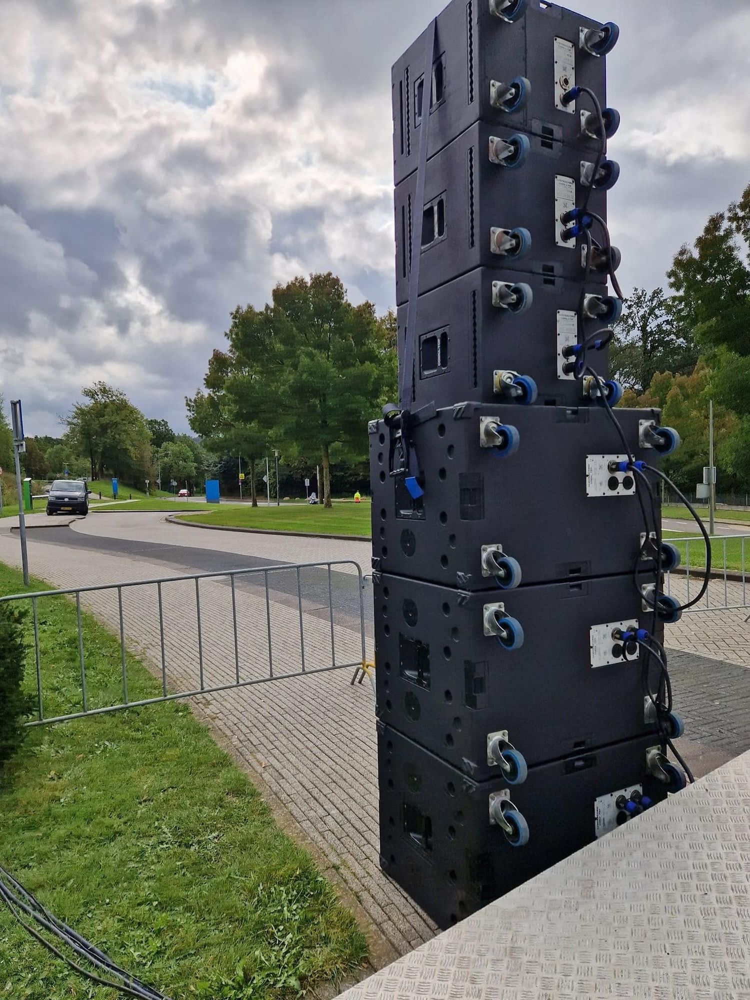
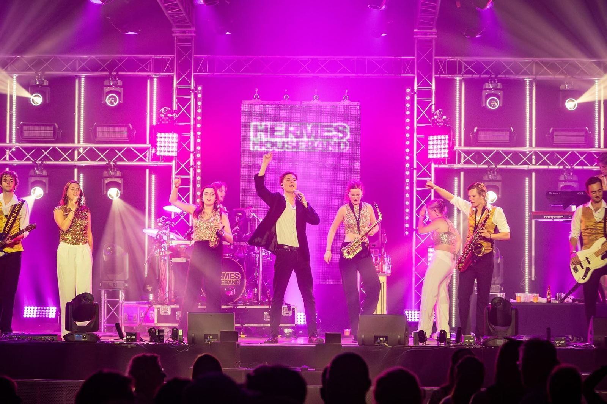
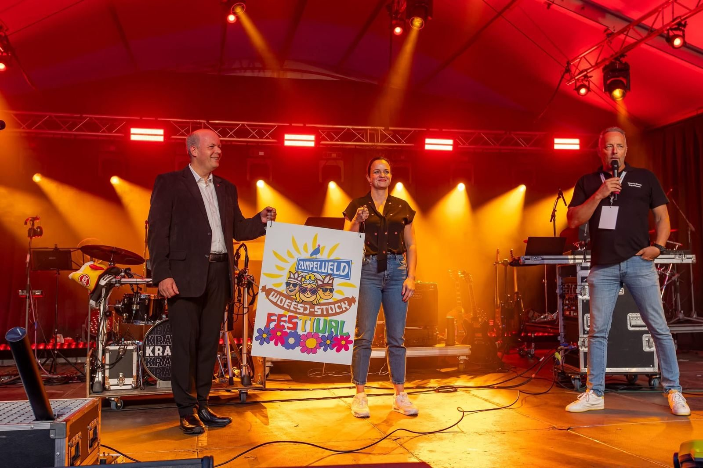
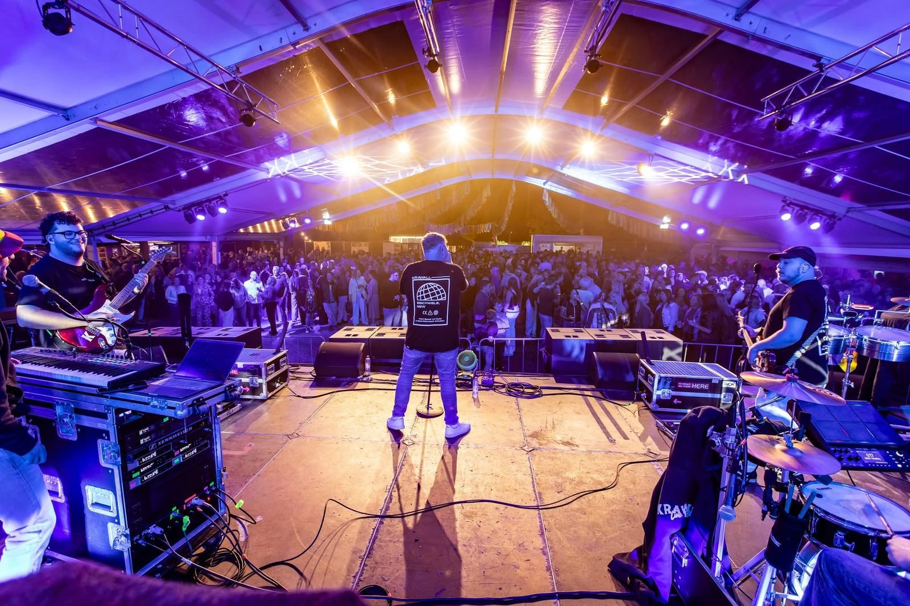

—Diensten
Alle techniek,
uit één hand.
Je kunt ons inschakelen voor één onderdeel of voor je complete productie. Hoe groter het geheel, hoe meer je merkt wat één partner scheelt.

CH 01Geluid
Van heldere speech tot een volle festivalwei.
Hier is het ooit begonnen: met verhuur en zelfgebouwde speakers. Goed geluid draait om verstaanbaarheid, balans en beleving. We stemmen het systeem af op de ruimte, het publiek en wat er op het podium gebeurt, zodat elk woord aankomt en elke beat raakt.
- Systemen voor zaal, tent en open lucht
- Podium- en monitorgeluid voor bands en artiesten
- Speech, ceremonies en presentaties
- Bediening door eigen technici

CH 02Licht
Sfeer waar het moet, spektakel waar het kan.
Licht bepaalt hoe je event voelt, en hoe het eruitziet op elke foto en video. Samen met MATRIX E.I.L., dat draait op grote festivals en clubshows, verzorgen we lichtontwerp, voorprogrammering, visuals en live bediening. Zo krijgt ook een dorpsfeest of jubileum de kennis van de grote podia.
- Lichtontwerp en previsualisatie
- Programmering en live operation
- LED, effecten, CO2 en confetti
- Sfeerverlichting voor zalen en tenten

CH 03Omroep & 100V
Waar we al generaties bekend om staan.
Omroepinstallaties en 100V-systemen zitten in ons DNA. Op het Oud Limburgs Schuttersfeest (OLS) hingen meer dan 140 van onze hoorns en reden diverse jurywagens met onze omroep. Langs de Amstel Gold Race hangen ze langs het parcours. Over een groot terrein zorgen we dat iedereen hoort wat er gezegd wordt, betrouwbaar en goed verstaanbaar.
- Tijdelijke en vaste omroepinstallaties
- 100V-systemen over grote afstanden
- Jurywagens en mobiele omroep
- Schuttersfeesten, wielerkoersen en evenemententerreinen

CH 04Stroom & infra
Geen stroom, geen show. Wij regelen het.
Op locatie begint alles bij stroom. We leveren aggregaten en zorgen voor een praktische, veilige stroomverdeling, zodat geluid, licht, bars en foodtrucks gewoon blijven draaien.
- Aggregaten
- Stroomverdeling en bekabeling
- Planning van de stroombehoefte vooraf
- Op afgelegen locaties en in tenten

CH 05Complete productie
Eén partner, van eerste idee tot laatste kabel.
De kracht van GTF Franzen zit in het geheel. Geluid, licht, stroom en podiumtechniek komen bij ons uit één hand, met één aanspreekpunt. Je hoeft niet te schakelen tussen vijf leveranciers. Wij denken mee, plannen alles op elkaar af en staan er op de dag zelf.
- Eén aanspreekpunt voor alle techniek
- Technische planning en draaiboek
- Opbouw, show en afbouw
- Voor festivals, jubilea, bedrijfsevents en meer
Sleep de stekker erinStroom staat erop. Nu jouw event.
Vertel ons wat je
van plan bent.
Een kort berichtje is genoeg. We denken vrijblijvend mee en sturen je een voorstel op maat.